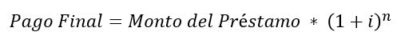

En este método de pago unicamente haces un pago, en el cual se incluiran el monto prestado y los intereses, realizando este único pagó el finalizar el perido establecido. Así, debemos calcular primero el pago total que haremos al finalzar el periodo usando la siguiente formula:  Donde:
Finalmente para saber el monto que calcularemos de intereses restaremos el monto del préstamo al monto del pago final